Feuilles d’exercices — Second degré
“Les équations sont plus importantes pour moi, car la politique ne dure pas.”
Albert Einstein
Fonctions du second degré
Exercice 1
Exercice 1 :
Résoudre les équations suivantes :
- \((E_0)\,:\,(7x-2)(5-x)-(x+4)(7x-2)=0\)
- \((E_1)\,:\,x^2=9\)
- \((E_2)\,:\,x^2=-3\)
- \((E_3)\,:\,(x-5)^2=3\)
- \((E_4)\,:\,(5x-4)^2-(3x+7)^2\)
- \((E_5)\,:\,(2x+1)^2+x(1-2x)=4x^2-1\)
- \((E_6)\,:\,\frac{2x+3}{x-2} = 2\)
- \((E_7)\,:\,(6x-3)^2 -(2x-1)=0\)
Exercice 2
Exercice 2 :
Résoudre dans \(\R\) les inéquations suivantes :
- \((I_0)\,:\,(5x+3)(1-2x) > 0\)
- \((I_1)\,:\,\frac{(5x + 3)(2x-1)}{x^2 - 4} < 0\)
- \((I_2)\,:\,16a^4-9 < 0\)
- \((I_3)\,:\,\frac{3x - 16}{5x - 2} \geqslant 3x + 8\)
Exercice 3
Exercice 3 :
Parmi les fonctions suivantes, déterminer celles qui sont des fonctions du second degré
- \(f(x)= (3x-1)(2-3x)-5x\)
- \(g(x) =(x-3)(6x^2+x+1) - (3x^2-1)(2x+1)\)
- \(h(x)= \frac{x^3-x^2-5x+2}{x+2}\)
- \(i(x)= \sqrt{x^2+3}\)
Exercice 4
Exercice 4 :
Pour chacune des expressions suivantes, mettre sous forme canonique :
- \(f(x)=2x^2+8x-1\)
- \(g(x)=2x^2+3x+4\)
- \(h(x)= -x^2+5x-7\)
Exercice 5
Exercice 5 :
On considère la fonction \(f\) définie sur \(\R\) par
\[f(x)= 2(x-6)(x-2)\] On note \(\mathscr{C}_f\) sa courbe représentative dans un repère du plan.
- Montrer que, pour tout réel \(x\), \[f(x)= 2x^2-16x+24\]
- Déterminer la forme canonique de \(f\).
- En utilisant la forme la plus adaptée de \(f\) :
- Déterminer les coordonnées des points d’intersection de \(\mathscr{C}\) avec les axes du repère.
- S est le point de \(\mathscr{C}_f\) d’abscisse 4. Quelle est son ordonnée ?
- Déterminer les antécédents de 24 par \(f\).
- Montrer que, pour tout réel \(x\), \[f(x) >-8\] Que peut-on en déduire pour la fonction \(f\)
Exercice 6
Exercice 6 :
Soit \(f\) la fonction définie sur \(\R\) par : \[f(x)= x^2+12x+32\] On note \(\mathscr{C}_f\) sa courbe représentative dans un repère du plan.
- Déterminer la forme canonique de \(f\).
- Déterminer une factorisation de \(f\).
- Répondre aux questions suivantes en utilisant la forme de \(f\) la plus adaptée.
- \(S(-6\,;\, -4)\). Le point appartient-il à \(\mathscr{C}_f\) ?
- En quels points \(\mathscr{C}\) coupe-t-elle l’axe des abscisses ?
- Déterminer le ou les antécédent(s) de \(32\) par \(f\) .
- Montrer que \(-4\) est le minimum de \(f\)
Exercice 7
Exercice 7 :
Soit \(f\) la fonction définie sur \(\R\) par \[f(x)=(2x-3)^2+(x+5)(2x-3)\]
- Déterminer une forme factorisée de \(f\)
- Déterminer la forme développée réduite de \(f\)
- Déterminer la forme canonique de \(f\).
- En utilisant la forme la plus adaptée de \(f\) :
- Calculer \(f(0)\), \(f(\sqrt{3})\) et \(f\left(\frac{5}{12}\right)\).
- Déterminer les racines de \(f\).
- Déterminer les antécédents de 24 par \(f\).
- Déterminer le minimum de \(f\).
Équation du second degré - Racine évidente
Exercice 8
Exercice 8 :
Pour chacune des fonctions suivantes, dire si le nombre \(x_0\) est une racine.
- \(f(x)= 2x^2-5x+1\) et \(x_0=1\)
- \(g(x)= 6x^2+x-1\) et \(x_0=\frac{1}{3}\)
- \(h(x)= x^2-2x+2\sqrt{2}\) et \(x_0=\sqrt{2}\)
Exercice 9
Exercice 9 :
Soient \(m\) un réel et \(f\) la fonction définie sur \(\R\) par \[f(x)=(m-1)x^2+2mx+1-3m\]
- Déterminer l’ensemble \(D\) des valeurs de \(m\) pour lesquelles \(f\) est une fonction polynôme de degré \(2\).
- Montrer que, pour tout \(m \in D\), \(1\) est une racine de \(f\).
- Déterminer la valeur de \(m\) pour la quelle \(-2\) est une racine, puis factoriser \(f\) dans ce cas.
Exercice 10
Exercice 10 :
Pour chacune des équations suivantes, déterminer une racine évidente et factoriser.
- \((E_1)\,:\, x^2+x-2=0\)
- \((E_2)\,:\, -6x^2-10x+4=0\)
- \((E_3)\,:\, 2x^2+3x+2=0\)
Exercice 11
Exercice 11 :
Montrer que l’équation \(-x^2+2x+1\) admet \(1-\sqrt{2}\) comme racines
On considère \(\varphi =\frac{1+\sqrt{5}}{2}\)
- Montrer que \(\varphi\) est solution de l’équation \(x^2-x-1\)
- En utilisant la méthode \(f(x)-f(r)\) donner une forme factorisée de \(x^2-x-1\).
- En déduire que l’autre racine est \(-\frac{1}{\varphi}\)
- Sans aucun calcul numérique, donner la valeur exacte de \(\varphi^3\).
Exercice 12
Exercice 12 :
Résoudre les équations du second degré suivantes :
- \((E_1)\,:\, -2x^2-5x+3=0\)
- \((E_2)\,:\, 2x^2-x+3=0\)
- \((E_3)\,:\, x^2+2\sqrt{3} x+3=0\)
- \((E_4)\,:\, 2x(5+x)=9-2x\)
- \((E_5)\,:\, x^2=x+1\)
- \((E_6)\,:\, (x^2-16)+2(x-4)=0\)
Exercice 13
Exercice 13 :
- Factoriser \(x^2+3x+2\).
- En déduire la résolution de \[(E_1):\, x^2+3x+2=5(x+1) \qquad et \qquad (E_2)\,:\, \frac{2}{x^2+3x+2} =\frac{1}{x+2}\]
Exercice 14
Exercice 14 :
Résoudre les équations suivantes :
- \((E_1)\,:\, -\frac{-2x}{x^2+1} =3\)
- \((E_2)\,:\, \frac{3}{x} - \frac{1}{2x-1} = 2\)
- \((E_3)\,:\, \frac{3}{x^2} = \frac{1}{2x} +1\)
- \((E_4)\,:\, x^3-x^2+4x=0\)
- \((E_5)\,:\, \frac{6x^2-13x+5}{2x-1}=0\)
- \((E_6) \,:\,\frac{1}{x} + \frac{2}{x+1} = \frac{3}{x-1}\)
Exercice 15
Exercice 15 : On considère l’équation \((E)\,:\, \sqrt{5x+6}=x+2\)
- On suppose qu’il existe une solution \(x_0\). Déterminer les valeurs possibles de \(x_0\).
- En déduire les solutions de l’équation.
Exercice 16
Exercice 16 :
En utilisant la même méthode qu’à l’exercice précédent, résoudre les équations suivantes :
- \((E_1)\,:\, \sqrt{5x+6}=x+2\)
- \((E_2)\,:\, \sqrt{x+4}=7-2x\)
- \((E_3)\,:\, \sqrt{x+3} -\sqrt{x}= 1\)
Exercice 17
Exercice 17 :
- Résoudre l’équation \((E_1)\,:\,3x^2-4x-4=0\)
- En déduire les solutions de \[(E_2)\,:\, 3x^4 -4x^2-4=0\qquad et \qquad (E_3)\,:\, 3x-4\sqrt{x}-4=0\]
Exercice 18
Exercice 18 :
On considère la fonction \(f: x \mapsto 2x^4 - 9x^3 + 14x^2 - 9x + 2\).
- Le nombre 0 est-il racine de \(f\) ?
- Soit \(r \in \mathbb{R}\). Montrer que si \(r\) est une racine de \(f\) alors \(\frac{1}{r}\) est également une racine de \(f\).
- Montrer que l’équation \(f(x) = 0\) est équivalente à l’équation \[ (E): 2\left(x^2 + \frac{1}{x^2}\right) - 9\left(x + \frac{1}{x}\right) + 14 = 0. \]
- On pose \(u = x + \frac{1}{x}\). Déduire de la question précédente que $ (E) $ est équivalente à \[ (E'): 2u^2 - 9u + 10 = 0. \]
- Résoudre $(E’) $ et en déduire les solutions de $(E) $.
Exercice 19
Exercice 19 :
On considère un rectangle \(ABCD\) tel que \(AB=4\), \(AD=10\).
Soit \(M\) un point variable du segment \([BC]\). Déterminer la ou les position(s) de \(M\) sur le segment pour que le triangle \(AMD\) soit rectangle en \(M\).
Exercice 20
Exercice 20 :
Soient \(a\) et \(b\) deux réels distincts et \(P\) un polynôme définie sur \(\R\) par \(P(x)= a^2(b-x) +b^2(x-a) +x^2(a*-b)\).
Résoudre \(P(x)=0\).
Lien coefficients - racines
Exercice 21
Exercice 21 :
Résoudre les équations suivantes en cherchant une racine évidente.
- \((E_1) : -5x^2 - 3x + 2 = 0\)
- \((E_2) : 2x^2 - x + 6 = 0\)
- \((E_3) : \sqrt{2}x^2 - 3x + 6 - 4\sqrt{2} = 0\)
Exercice 22
Exercice 22 :
Résoudre les systèmes suivants :
\[(S_1) : \begin{cases} u + v = 5 \\ uv = 12 \end{cases} \quad ; \quad (S_2) : \begin{cases} u + v = 4 \\ uv = 1 \end{cases} \quad ; \quad (S_3) : \begin{cases} u + v = -8 \\ uv = 12 \end{cases}\]
Exercice 23
Exercice 23 :
- Trouver deux entiers consécutifs dont la différence des carrés est 527.
- Trouver deux entiers consécutifs dont le produit est égal au double de la somme, s’ils existent.
Exercice 24
Exercice 24 :
Déterminer les dimensions d’un rectangle dont l’aire est de 285 cm² et le périmètre 81 cm.
Exercice 25
Exercice 25 :
On considère l’équation \(2x^2 - 2x - 7 = 0\).
- Sans aucun calcul, justifier que cette équation admet deux racines distinctes.
- Justifier que ces racines sont de signes contraires.
- On note \(\alpha\) et \(\beta\) les racines. Sans calculer \(\alpha\) et \(\beta\), déterminer la valeur de :
- \(\alpha + \beta\)
- \(\alpha \beta\)
- \(\dfrac{1}{\alpha} + \dfrac{1}{\beta}\)
- \(\alpha^2 + \beta^2\)
- \(\alpha + \beta\)
Exercice 26
Exercice 26 :
(Extrait Évaluation)
On considère la fonction \(f\) définie par \(f(x)= 3x^2 - 5x - 7\).
On admet que cette fonction admet deux racines distinctes \(x_1\) et \(x_2\), que l’on ne cherchera pas à calculer, avec \(x_1 < x_2\).
- Déterminer le signe de \(x_1\) et le signe de \(x_2\).
- Préciser celle dont la valeur absolue est la plus grande.
Exercice 27
Exercice 27 :
Déterminer deux nombres réels \(a\) et \(b\) tels que :
\[(S_1) : \begin{cases}
a + b + ab = -\dfrac{5}{3} \\
a^2b + ab^2 = 4
\end{cases}\]
Factorisation - Signe d’une fonction du second degré
Exercice 28
Exercice 28 : Pour chacune des affirmations suivantes, dire si elles sont vraies ou fausses.
On considère \(f\) une fonction définie sur \(\R\) par \[f(x)=ax^2+bx+c\]
- Si \(3\) et \(2\) sont des racines de \(f\), alors \(f(x)=(x-2)(x-3)\)
- Si \(a+b+c=0\) et si \(a-b+c=0\) alors \(f(x)=a(x^2-1)\)
- Si \(c=0\) alors \(0\) est racine de \(f\);
- Si \(f\) admet deux racines opposés alors \(b=0\).
- Si \(b^2 -4ac \leqslant 0\), alors \(f\) peut se factoriser.
Exercice 29
Exercice 29 :
- Déterminer un trinôme du second degré admettant \(2\) et \(-5\) comme racines.
Que peut-on dire de son discriminant ?
- Soit \(f\) une fonction polynôme du second degré vérifiant \(f(2)=0\), \(f(-3)=0\) et \(f(1)=4\).
Déterminer l’expression de \(f\).
- Soit \(f\) une fonction polynôme du second degré vérifiant \(f(2)=1\), \(f(-3)=1\) et \(f(1)=4\).
Déterminer l’expression de \(f\).
Exercice 30
Exercice 30 :
Factoriser les polynomes suivante :
- \(P_1(x) = -6x^2+25-14\)
- \(P_2(x)= x^2-(1+\sqrt{5})x+\sqrt{5}\)
- \(P_3(x)= 4x^2-8x+4\)
- \(P_4(x) = -x^2+9\)
- \(P_5(x) = x^2-x+12\)
Exercice 31
Exercice 31 :
Dans chacun des cas suivants, donner le signe des polynômes suivants
- \(P_1(x)=-6x^2+25-14\)
- \(P_2(x) = -x^2 + 2x - 6\)
- \(P_3(x)=-6x^2 + 14\)
- \(P_4(x)=x^2 - 7x + 2\)
- \(P_5(x)-3x^2 + 10x + 1\)
Exercice 32
Exercice 32 :
Déterminer la position relative des représentations graphiques des fonctions \(f_1\) et \(f_2\) dans les cas suivants :
- \(f_1(x)= 4-x^2 \; \et \; f_2(x)=x^2+3x+1\)
- \(f_1(x)=x^2+x \; \et \; f_2(x)=-x^2+5x-2\)
Exercice 33
Exercice 33 :
Résoudre les inéquations suivantes :
- \((I_1) \,:\, (x-2)(7x^2-5x+1)\)
- \((I_2)\,:\, \dfrac{x^2 + 4x + 4}{x - 6} > 0\)
- \((I_3)\,:\,\dfrac{9x^2 - 2}{x + 2} \leq 0\)
- \((I_4) \,:\, \dfrac{1}{x-2} + \dfrac{3}{x}< \dfrac{1}{x+7}\)
- \((I_5)\,:\,5x + 6 \leq \dfrac{1}{x - 2}\)
- \((I_6) \,:\, \dfrac{1}{x-1} + \dfrac{1}{x} + \dfrac{1}{x+2} \geqslant x\)
Exercice 34
Exercice 34 :
- \(f\) est la fonction polynôme définie sur \(\mathbb{R}\) par \(f(x) = 4x^3 + 2x^2 - 2x - 1\).
- Démontrer que pour tout réel \(x\), \(f(x) = (2x + 1)(ax^2 + bx + c)\), où \(a\), \(b\) et \(c\) sont des réels à déterminer.
- Résoudre dans \(\mathbb{R}\) l’équation \(f(x) = 0\).
- Démontrer que pour tout réel \(x\), \(f(x) = (2x + 1)(ax^2 + bx + c)\), où \(a\), \(b\) et \(c\) sont des réels à déterminer.
- \(f\) est la fonction polynôme définie sur \(\mathbb{R}\) par \(f(x) = x^3 - 4x^2 - \dfrac{9}{4}x + 9\).
- Démontrer que pour tout réel \(x\), \(f(x) = (x - 4)(ax^2 + bx + c)\), où \(a\), \(b\) et \(c\) sont des réels à déterminer.
- Donner le tableau de signe de \(f(x)\).
- Démontrer que pour tout réel \(x\), \(f(x) = (x - 4)(ax^2 + bx + c)\), où \(a\), \(b\) et \(c\) sont des réels à déterminer.
Exercice 35
Exercice 35 :
On considère la fonction \(P\) définie sur \(\mathbb{R}\) par \(P(x) = x^3 - 5x^2 + 5x + 3\).
1. A l’aide de la calculatrice, en déduire une racine évidente \(r\) de \(P\).
2. Déterminer les réels \(a\), \(b\) et \(c\) tels que, pour tout réel \(x\), \(P(x) = (x - r)(ax^2 + bx + c)\).
3. Dresser le tableau de signes de \(P(x)\).
Exercice 36
Exercice 36 :
- On souhaite démontrer pour tout \(x\) strictement positif
\[x+\dfrac{1}{x} -2 \leqslant 0\]- Démonter l’inégalité en utilisant résolvant une inéquation du second degré.
- Montrer que l’inégalité est vraie en utilisant une identité remarquable adaptée.
- Démonter l’inégalité en utilisant résolvant une inéquation du second degré.
- En déduire le minimum de la fonction \(f\) définie sur \(]0\,;\,+\infty[\) par \(f(x)=x+\dfrac{1}{x}\)
- Montrer que pour tout réel \(a\) et \(b\) positifs strictement,
- \(\dfrac{a}{b} + \dfrac{b}{a} \geqslant 2\)
- \((a+b)\left(\dfrac{1}{a}+\dfrac{1}{b}\right) \geqslant 2\)
- \(\dfrac{a}{b} + \dfrac{b}{a} \geqslant 2\)
Exercice 37
Exercice 37 :
Résoudre l’inéquation
\[\dfrac{1}{x-1} + \dfrac{1}{x} + \dfrac{1}{x+2} \geqslant x\]
Exercice 38
Exercice 38 :
Résoudre le système suivant
\[
\left\{
\begin{array}{l}
x^2-5x+6\geq 0 \\[2pt]
x^2+9x+14 < 0
\end{array}
\right.
\]
Mise en problème : Géométrie
Exercice 39
Exercice 39 :
Dans le plan muni d’un repère orthonormé d’unité 1 cm, on considère la représentation graphique de la fonction \(f : x \longmapsto \sqrt{x}\).
Soit \(M\) un point d’abscisse \(x\) de la représentation graphique de \(f\) et \(A(2\,;\, 0)\).
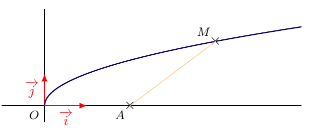
- Exprimer \(AM\) en fonction de \(x\)
- Dans chacun des cas suivants, déterminer la valeur de \(x\) :
- \(AM = 4\)
- \(AM = 1\)
- \(AM = 4\)
- Soit \(a\) un réel strictement positif. Montrer qu’il existe un point \(M\) appartenant à la représentation graphique de \(f\) tel que \(AM = a\) si et seulement si \(a \geqslant \dfrac{\sqrt{7}}{2}\)
Exercice 40
Exercice 40 :
Soit \(m\) un nombre réel. Déterminer suivant les valeurs de \(m\), le nombre de points d’intersection de la parabole \(\mathscr{P} : y = x^2\) et de la droite \(\mathscr{D}_m : y = mx - 1\)
Exercice 41
Exercice 41 :
Un jardin est de forme carrée. Son côté mesure 20 m. Deux allées rectilignes de même largeur, l’une horizontale, l’autre verticale, se croisent en son centre et délimitent quatre parterres de fleurs identiques. On souhaite semer des fleurs dans les zones en vert sur le schéma ci-dessous (les quatre parterres).
On note \(x\) la largeur (en mètres) de chaque allée.
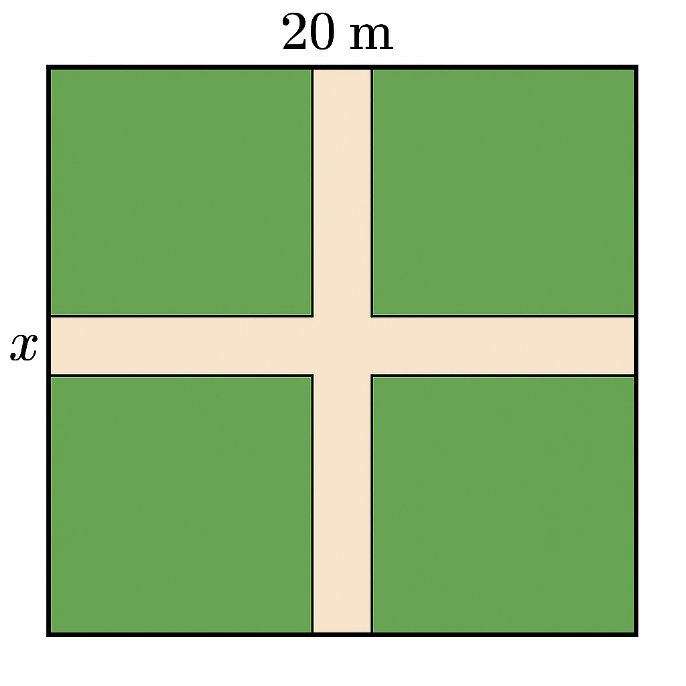
- Exprimer l’aire totale des allées en fonction de \(x\).
- Montrer que l’aire des parterres de fleurs est donnée par :
\[A(x) = 400 - 40x + x^2\] - Quelle largeur \(x\) faut-il choisir pour que les fleurs occupent exactement les trois quarts du jardin ?
Exercice 42
Exercice 42 :
(Extrait DST 2024-2025)
Un miroir peut être représenté par la figure ci-dessous. Le rectangle \(ABCD\) symbolise le cadre du miroir.
\(AEFD\) est un trapèze et constitue le miroir proprement dit.
Les deux triangles \(ABE\) et \(DFC\) sont des pièces de bois ouvragées.
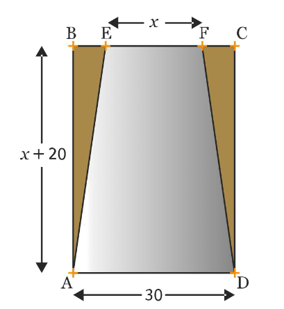
L’unité est le centimètre. On pose \(EF = x\), et on a \(BE = FC\), \(AB = x + 20\) et \(AD = 30\).
- Montrer que l’expression de l’aire de \(AEFD\) en fonction de \(x\) est :
\[0{,}5x^2 + 25x + 300\] - Quelle valeur de \(x\) faut-il choisir pour que le miroir \(AEFD\) ait une aire égale aux neuf dixièmes de l’aire totale du rectangle \(ABCD\) ?
Exercice 43
Exercice 43 :
Un terrain carré \(ABCD\) a pour côté 10 m.
Un paysagiste souhaite planter du gazon sur deux parties de ce terrain représentées par le carré \(AEFG\) et le triangle \(BFC\) de telle sorte que l’aire de la partie restante soit d’au moins 30 m². On note \(AE = x\).

- À quel intervalle le nombre \(x\) appartient-il ?
- Résoudre le problème du paysagiste.
Exercice 44
Exercice 44 :
On dispose d’une corde de 12 cm de longueur.
Déterminer le triangle isocèle d’aire maximale que l’on peut construire avec cette corde.
Problèmes de recherche
Exercice 45
Exercice 45 :
On considère \(f\) une fonction polynôme de degré 2 telle que \(f(1) = 1\), \(f(-2) = 4\) et \(f(0) = 6\).
Soit \(g\) la fonction définie pour tout réel \(x\) par :
\[g(x) = f(x) - x^2\]
- Déterminer \(g(1)\), \(g(2)\) et \(g(0)\). En déduire une factorisation de \(g(x)\).
- En déduire alors l’expression de \(f(x)\) sous forme développée puis canonique.
Exercice 46
Exercice 46 :
La fonction \(f\) est une fonction polynôme de degré \(98\), telle que pour tout entier \(k\) compris entre 1 et 99 on ait :
\[f(k) = \frac{1}{k}\]
- On considère la fonction \(g\) définie pour tout réel \(x\) par :
\[g(x) = x f(x) - k\]- Déterminer le degré de \(g\).
- Que peut-on dire de \(g(k)\) pour \(k \in \{1, 2, \dots, 99\}\) ?
- En déduire que \(g\) admet 99 zéros entiers distincts.
- Donner l’expression de \(g(x)\).
- Déterminer le degré de \(g\).
- Donner l’expression de \(g(x)\), puis en déduire \(f(x)\).
Exercice 47
Exercice 47 :
La fonction \(f\), polynôme du troisième degré, est telle que :
\[|f(1)| = |f(2)| = |f(3)| = |f(-1)| = |f(-2)| = |f(-3)| = 12\]
Trouver \(|f(0)|\).
Indication : on pourra introduire les fonctions \(x \longmapsto f(x) - 12\) et \(x \longmapsto f(x) + 12\).
Exercice 48
Exercice 48 :
Soit \(f\) définie par \(f(x) = 2(x - 3)(x - 5)\) et soit \((P)\) la parabole représentant \(f\) dans un repère orthonormé.
Déterminer le réel \(k\) tel que la droite d’équation \(y = k\) coupe \((P)\) en deux points \(A\) et \(B\) tels que \(AB = 6\).
Exercice 49
Exercice 49 :
(Kangourou des maths, 2016)
Déterminer les solutions de l’équation :
\[(x^2 - 7x + 11)^{x^2 - 3x + 2} = 1\]
Représentation graphique : Parabole
Exercice 50
Exercice 50 :
Sans utiliser la calculatrice, associer chaque fonction ci-dessous à la courbe qui lui correspond :
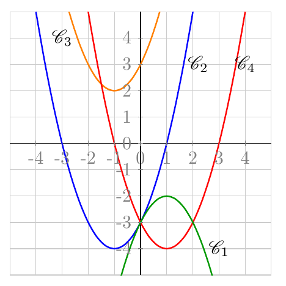
- \(f(x) = x^2 - 2x - 3\)
- \(g(x) = x^2 + 2x - 3\)
- \(h(x) = x^2 + 2x + 3\)
- \(i(x) = -x^2 + 2x - 3\)
Exercice 51
Exercice 51 :
Les courbes données ci-dessous sont les représentations graphiques de fonctions polynômes de degré 2 sous la forme canonique
\[f(x) = a(x - \alpha)^2 + \beta\]
- Déterminer pour chacune d’elles le signe de \(\alpha\), \(\beta\) et \(a\).
- Déterminer les formes canoniques de chacune de ces fonctions.
Exercice 52
Exercice 52 :
À la pêche 🎣
On souhaite attraper une carpe koi qui ne sort de sa cachette que pour manger.
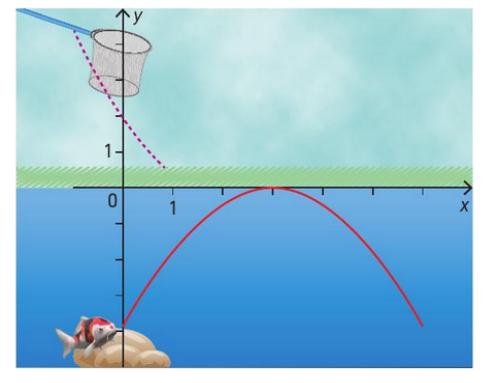
Sa trajectoire est un arc de parabole d’équation :
\[y = -x^2 + 4x - 4\]
L’épuisette suit la parabole d’équation :
\[y = x^2 - 4x + 2\]
Est-il possible d’atteindre la carpe ? Si oui, combien de fois ?
Exercice 53
Exercice 53 :
Convexité de la fonction carré
On considère la parabole \(\mathscr{P} : y = x^2\) et un point \(A(a\,;\,a^2)\) sur \(\mathscr{P}\).
On considère une droite \(\mathscr{D}\) de coefficient directeur \(m\) passant par \(A\).
- Montrer que \(\mathscr{D} : y = mx - ma + a^2\)
- Démontrer que \(\mathscr{D}\) et \(\mathscr{P}\) ont \(A\) comme unique point commun si et seulement si \(m = 2a\)
- En déduire que \(\mathscr{P}\) est au-dessus de chacune de ses tangentes.
Exercice 54
Exercice 54 :
À la piscine 🏊♀️
Emma plonge de 2 m de haut. Sa trajectoire suit une parabole \(\mathcal{P}\) ayant pour sommet \(S(1\,;\,2{,}4)\).
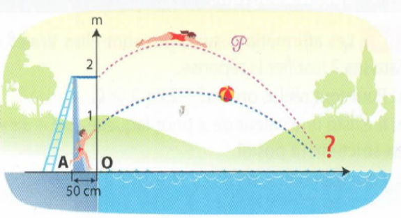
- Déterminer une équation de \(\mathcal{P}\).
- À quelle distance du pied du plongeoir Emma va-t-elle toucher l’eau ?
- Son frère Damien lui lance une balle pendant son plongeon. La balle suit une trajectoire parabolique :
\[y = -0{,}25x^2 + 0{,}6x + 1\]
Emma peut-elle l’attraper ? Si oui, à quelle hauteur ?
Exercice 55
Exercice 55 :
Projet de rampe de skate 🛹
Quentin présente un projet de rampe de skate modélisée par un arc de parabole, avec les conditions suivantes :
- Plateforme hauteur 70 cm, largeur 30 cm
- Point B à 20 cm du sol, projeté orthogonalement à 230 cm du pied de la plateforme
- Hauteur entre les extrémités de la plateforme : 1,50 m
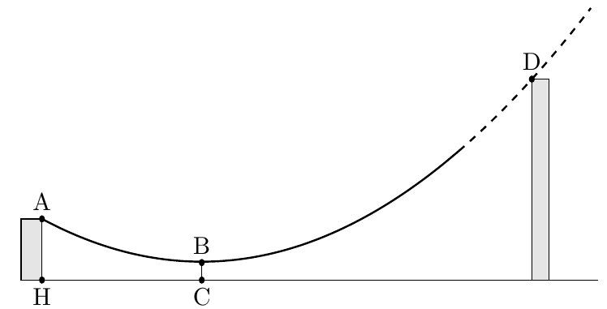
À quelle distance du point H faut-il placer le pied de la seconde plateforme pour respecter toutes les conditions ?
(On utilisera des valeurs exactes.)
Exercice 56
Exercice 56 :
On considère la parabole \(\mathscr{P} : y = x^2\). Soit \(A\) et \(B\) deux points de \(\mathscr{P}\).
On cherche à déterminer l’ordonnée du point d’intersection de la droite \((AB)\) avec l’axe des ordonnées.
- Cas particulier : \(A(3; 9)\), \(B(-5; 25)\)
- Conjecturer avec GeoGebra l’ordonnée de l’intersection.
- Déterminer l’équation de \((AB)\), puis résoudre.
- Conjecturer avec GeoGebra l’ordonnée de l’intersection.
- Cas général : \(A(a; a^2)\) et \(B(b; b^2)\)
- Déterminer l’équation de \((AB)\) en fonction de \(a\) et \(b\)
- En déduire la solution du problème.
- Déterminer l’équation de \((AB)\) en fonction de \(a\) et \(b\)
Variations - Axe de symétrie
Exercice 57
Exercice 57 :
Pour chacune des fonctions suivantes, tracer le tableau des variations :
- \(f(x)= 3(x - 2)^2 - 5\)
- \(g(x)= -5(x + 1)^2 + 2\)
- \(h(x)= -2^2 + 1\)
- \(i(x)= -\dfrac{2}{3}(x - 3)(x + 5)\)
- \(j(x)= x^2 - 4x - 4\)
- \(k(x)= -2x^2 - 5x + 1\)
Exercice 58
Exercice 58 :
On considère la fonction \(f\) définie sur \(\mathbb{R}\) par
\[f(x) = 3(x - 4)(x + 2)\]
et on note \(\mathscr{C}\) sa courbe représentative.
- Déterminer l’équation de l’axe de symétrie.
- Déterminer le tableau des variations de la fonction \(f\).
- À l’aide du tableau des variations, déterminer les solutions de \(f(x) < 0\).
Exercice 59
Exercice 59 :
(Extrait Évaluation)
Dans cet exercice les questions sont indépendantes. 1. et 2. sont indépendantes.
- On considère la fonction \(f\) dont on donne le tableau de variations suivant :
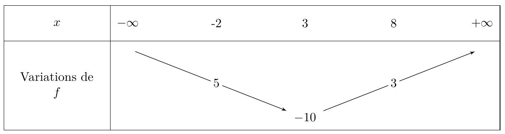
La fonction \(f\) peut-elle être une fonction du second degré ? Justifier la réponse.
- On considère une fonction du second degré \(g\) vérifiant \(g(4)=g(-2)=5\).
- Déterminer l’équation de l’axe de symétrie de la représentation graphique de \(g\).
- On sait de plus que \(g(-1)=0\).
Déterminer la valeur de l’autre racine si elle existe. Justifier votre réponse.
- Déterminer l’équation de l’axe de symétrie de la représentation graphique de \(g\).
Equations - Inéquations , et paramètres
Exercice 60
Exercice 60 :
Soit \(a\) un nombre réel. On considère l’équation : \[(E_a) : x^2 + (2 - a)x - a - 3 = 0\]
- Montrer que, pour tout réel \(a\), l’équation \((E_a)\) admet deux racines réelles \(x_1\) et \(x_2\).
- Exprimer, en fonction de \(a\), la somme et le produit des racines.
- En déduire que \(x_1^2 + x_2^2 = a^2 - 2a + 10\)
- Déterminer le réel \(a\) pour lequel la somme des carrés des racines est minimale. Déterminer \(x_1\) et \(x_2\) dans ce cas.
Exercice 61
Exercice 61 :
On considère la fonction du second degré \(h_m\) définie sur \(\mathbb{R}\) par :
\[h_m(x) = (m - 1)x^2 - 2x + m - 1\]
On note \(\Delta_m\) le discriminant de \(h_m\).
- Pour quelles valeurs de \(m\), \(h_m\) est-elle une expression du second degré ?
- Déterminer les valeurs de \(m\) pour lesquelles \(h_m(x)\) est factorisable par \((x - 3)\).
- Déterminer les valeurs de \(m\) pour lesquelles \(h_m(x)\) est factorisable par \((x - 3)\).
- Démontrer que le produit des racines est constant.
- Montrer que \(\Delta_m = -4m(m - 2)\)
- Discuter, suivant les valeurs de \(m\), le nombre de solutions de \(h_m(x) = 0\)
(On ne demande pas de calculer les racines)
- Déterminer, si elles existent, les valeurs de \(m\) pour lesquelles \(h_m(x)\) est strictement positif.
- Montrer que \(\Delta_m = -4m(m - 2)\)
Exercice 62
Exercice 62 :
- Résoudre dans \(\mathbb{R}\) l’équation \(3m^2 + 7m - 6 = 0\)
- Résoudre dans \(\mathbb{R}\) l’équation \(3m^2 + 7m - 6 = 0\)
- Préciser le signe de \(3m^2 + 7m - 6\) selon les valeurs de \(m\)
- Soit l’équation \((E): (m - 1)x^2 - 4mx + m - 6 = 0\), où \(m\) est un réel donné.
- Déterminer \(m\) pour que \((E)\) ne soit pas une équation du second degré, puis résoudre \((E)\) dans ce cas.
- On suppose désormais que \((E)\) est une équation du second degré. Déterminer les valeurs de \(m\) dans chacun des cas suivants :
- \(-1\) est une solution de \((E)\)
- \((E)\) admet une solution double
- \((E)\) n’admet aucune solution réelle
- Pour tout \(x\), \((m - 1)x^2 - 4mx + m - 6 < 0\)
- \(-1\) est une solution de \((E)\)
- Déterminer \(m\) pour que \((E)\) ne soit pas une équation du second degré, puis résoudre \((E)\) dans ce cas.
Mise en problème 2, Approfondissement
Exercice 63
Exercice 63 :
Pour fêter la fin de leur année d’étude à Poudlard, Fred et Georges tirent un feu d’artifice. La trajectoire est donnée par :
\[y = -\frac{g}{2v^2}(1 + \tan^2\theta)x^2 + x \tan\theta\]
avec \(v = 50\,\text{m/s}\), \(g = 9{,}8\) et \(\theta = 80^\circ\).
- Quelle est la hauteur maximale atteinte par les fusées et à quelle distance ?
- Le professeur Rogue situé à 100 m sera-t-il touché si la portée est de 10 m autour du point de chute ?
- Calculer l’angle \(\theta\) pour que les fusées tombent pile sur le professeur Rogue.
Exercice 64
Exercice 64 :
On considère un segment \([AB]\) de longueur \(1\) mètre. Un point \(M\) est sur \([AB]\), et on construit deux disques \(D_1\) et \(D_2\) de diamètres respectifs \([AM]\) et \([MB]\).
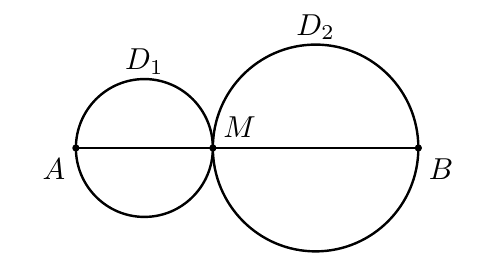
Déterminer le ou les emplacements du point \(M\) tels que la somme des aires des disques \(D_1\) et \(D_2\) soit minimale.
Exercice 65
Exercice 65 :
On considère la parabole \(\mathscr{C}\) d’équation : \[y = -x^2 + 11x - 18\]
Un triangle \(ABM\) est dessiné avec \(A(2,0)\), \(B(9,0)\), et \(M\) sur \(\mathscr{C}\).
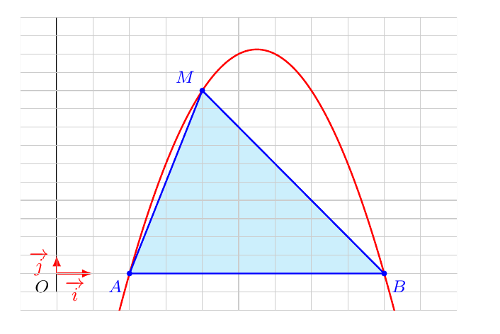
Déterminer où placer le point \(M\) pour que l’aire du triangle \(ABM\) soit maximale.
Exercice 66
Exercice 66 :
Distance d’un point à une droite
Dans un repère, on considère \(A(-4\,; -3)\), \(B(6\,; 2)\), \(C(0\,; 4)\).
- Montrer que \(A\), \(B\), \(C\) sont alignés.
- On pose \(\vec{AM} = t\vec{AB}\) et \(f(t) = CM^2\).
- Justifier l’existence de \(t\)
- Montrer que \(M(-4 + 10t\,;\, -3 + 5t)\)
- Montrer que \(f(t) = 125(t - \frac{3}{5})^2 + 20\)
- En déduire le tableau des variations de \(f\)
- Déterminer \(M\) tel que \(CM\) soit minimale
- Calculer l’aire du triangle \(ABC\)
- Justifier l’existence de \(t\)
Exercice 67
Exercice 67 :
On considère le polynôme :
\[P(x) = 4x^2 - (\sqrt{6} + 4\sqrt{3})x + 3\sqrt{2}\]
- Montrer que \(\frac{\sqrt{6}}{4}\) est une racine de \(P\)
- En déduire l’autre racine par factorisation
- Calculer le discriminant \(\Delta\) de \(P\)
- Déduire une forme simplifiée de \(\sqrt{\Delta}\)
Exercice 68
Exercice 68 :
On pose :
\[t = \sqrt[3]{\sqrt{5}+2} - \sqrt[3]{\sqrt{5}-2}\]
- Montrer que \(t\) est solution de \(t^3 + 3t - 4 = 0\)
- À l’aide d’une racine évidente, factoriser \(t^3 + 3t - 4\)
- En déduire que \(t\) est un nombre entier
Exercices Bilan
Exercice 69
Exercice 69 :
On considère la fonction \(f\) définie sur \(\R\) par \(f(x)=-3x^2+6x-4\), de représentation graphique \(\mathscr{C}\). 1.
1. Résoudre l’équation \(f(x)=<0\) . 2. En déduire la position de \(\mathscr{C}\) par rapport à l’axe des abscisses. 2. Déterminer la forme canonique de \(f\). 3. Déterminer l’équation de l’axe de symétrie de \(\mathscr{C}\) ainsi que les coordonnées du sommet. 4.
1. Dresser le tableau de variations de \(f\). 2. En déduire, suivant les valeurs du réel \(m\), le nombre de solution de l’équation \(f(x)=m\). 5. Déterminer les coordonnées des points d’intersection de \(\mathscr{C}\) avec la droite d’équation \(y=-4\). 6. Étudier la position relative de \(\mathscr{C}\) et de la droite d’équation \(y=-4x+3\).
Exercice 70
Exercice 70 :
Soient \(f\) et \(g\) deux fonctions définies sur \(\R \backslash \{3\}\) respectivement par
\[f(x) = x^2-3x-1\quad \text{et} \quad g(x) = 1 +\frac{2}{x-3}\]
dont on note \(\mathcal{P}\) et \(\mathcal{H}\) les représentations graphiques respectives.
On donne ci-dessous les représentations graphiques de ces deux fonctions.
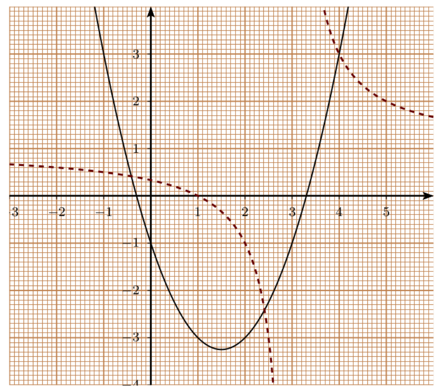
- Résolution graphique :
- Déterminer graphiquement les solutions de \(f(x) = 2\).
- Déterminer graphiquement les solutions de \(f(x) = g(x)\).
- Déterminer graphiquement les solutions de \(f(x) = 2\).
- Résolution algébrique :
- Déterminer les antécédents de \(-1\) par \(f\) et de \(1\) par \(g\) si ils existent.
- Démontrer que \(M(x,y) \in \mathcal{P} \cap \mathcal{H}\) si et seulement si
\[ \frac{(x-4)(x^2 -2x -1)}{x-3} = 0 \] (On remarquera que \(x^2 - 2x - 1 = (x-1)^2 - 2\)) - En déduire les abscisses des éléments de \(\mathcal{P} \cap \mathcal{H}\).
- En utilisant (1), déterminer les positions relatives de \(\mathcal{P}\) et \(\mathcal{H}\).
- Déterminer les antécédents de \(-1\) par \(f\) et de \(1\) par \(g\) si ils existent.
Exercice 71
Exercice 71 :
On considère la fonction \(f\) définie sur \(]-1\,;\,+\infty[\) par
\[f(x)= \frac{x^2 - x + 1}{x + 1}\]
On note \(\mathscr{C}\) sa courbe représentative.
- Montrer que la courbe \(\mathscr{C}\) est située au-dessus de l’axe des abscisses.
- Résoudre \(f(x) \geqslant 1\)
- Démontrer que pour tout \(x \in ]-1 \,;\,+\infty[\),
\[f(x) = x - 2 + \frac{3}{x+1}\]
- Démontrer que pour tout \(x \in ]-1 \,;\,+\infty[\),
- En déduire la position relative de \(\mathscr{C}\) par rapport à la droite \(\mathscr{D}\,:\, y = x - 2\)
- Étudier la position relative de \(\mathscr{C}\) par rapport à la droite \(\mathscr{D}\,:\, y = -x + 3\)
Exercice 72
Exercice 72 :
On considère la fonction \(f\) définie sur l’intervalle \([-2;2]\) par :
\[f(x) = 4 - x^2\]
On note \(\mathcal{P}\) sa courbe représentative.
Pour \(x \in [0;2]\), on note \(M\) le point de la courbe \(\mathcal{P}\) d’abscisse \(x\), \(N\) le symétrique de \(M\) par rapport à l’axe des ordonnées, \(Q\) et \(P\) les projetés orthogonaux de \(M\) et \(N\) sur l’axe des abscisses.
On s’intéresse au périmètre \(p(x)\) du rectangle \(MNPQ\).
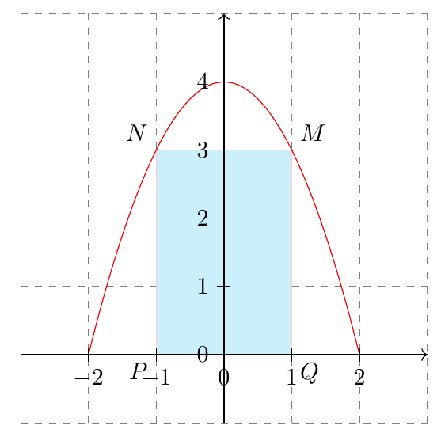
- Montrer que pour tout \(x \in [0;2]\) :
\[p(x) = -2x^2 + 4x + 8\] - Déterminer la forme canonique de la fonction \(p\).
- En déduire la position du point \(M\) sur la courbe \(\mathcal{P}\) pour laquelle le périmètre du rectangle \(MNPQ\) est maximum. Quel est ce périmètre maximum ?